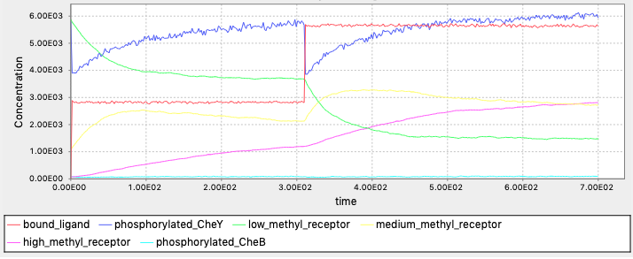

Solutions
How do E. coli respond to repellents?
Exercise 1
In contrast to that CheY phosphorylations decrease and tumbling becomes less frequent when the cell senses higher attractant concentrations, when the cell senses more repellents there should be more frequent tumbling. The decreased tumbling frequency should be a result of increased CheY phosphorylations. The cell should always be able to adapt to the current concentrations, therefore we also expect the CheY phosphoryaltions be restored when adpating.
Exercise 2
Update reaction rule for ligand-receptor binding from
BoundTP: L(t!1).T(l!1,Phos~U) -> L(t!1).T(l!1,Phos~P) k_T_phos*0.2
to
BoundTP: L(t!1).T(l!1,Phos~U) -> L(t!1).T(l!1,Phos~P) k_T_phos*5
The complete code (you can download a completed BioNetGen file here: exercise_repel.bngl):
begin model
begin molecule types
L(t) #ligand molecule
T(l,Phos~U~P) #receptor complex
CheY(Phos~U~P)
CheZ()
end molecule types
begin parameters
NaV2 6.02e8 #Unit conversion to cellular concentration M/L -> #/um^3
L0 5e3 #number of ligand molecules
T0 7000 #number of receptor complexes
CheY0 20000
CheZ0 6000
k_lr_bind 8.8e6/NaV2 #ligand-receptor binding
k_lr_dis 35 #ligand-receptor dissociation
k_T_phos 15 #receptor complex autophosphorylation
k_Y_phos 3.8e6/NaV2 #receptor complex phosphorylates Y
k_Y_dephos 8.6e5/NaV2 #Z dephosphoryaltes Y
end parameters
begin reaction rules
LR: L(t) + T(l) <-> L(t!1).T(l!1) k_lr_bind, k_lr_dis
#Free vs. ligand-bound receptor complexes autophosphorylates at different rates
FreeTP: T(l,Phos~U) -> T(l,Phos~P) k_T_phos
BoundTP: L(t!1).T(l!1,Phos~U) -> L(t!1).T(l!1,Phos~P) k_T_phos*5
YP: T(Phos~P) + CheY(Phos~U) -> T(Phos~U) + CheY(Phos~P) k_Y_phos
YDeps: CheZ() + CheY(Phos~P) -> CheZ() + CheY(Phos~U) k_Y_dephos
end reaction rules
begin seed species
L(t) L0
T(l,Phos~U) T0*0.8
T(l,Phos~P) T0*0.2
CheY(Phos~U) CheY0*0.5
CheY(Phos~P) CheY0*0.5
CheZ() CheZ0
end seed species
begin observables
Molecules phosphorylated_CheY CheY(Phos~P)
Molecules phosphorylated_CheA T(Phos~P)
Molecules bound_ligand L(t!1).T(l!1)
end observables
end model
generate_network({overwrite=>1})
simulate({method=>"ssa", t_end=>3, n_steps=>100})
The simulation outputs:

What if there are multiple attractant sources?
Exercise 1:
In molecule types and observables, update L(t) and T(l,r,Meth~A~B~C,Phos~U~P) to L(t,Lig~A~B) and T(l,r,Lig~A~B,Meth~A~B~C,Phos~U~P), where A and B represent the two ligand types. Update the reaction rule
LR: L(t) + T(l) <-> L(t!1).T(l!1) k_lr_bind, k_lr_dis
to
L1R: L(t,Lig~A) + T(l,Lig~A) <-> L(t!1,Lig~A).T(l!1,Lig~A) k_lr_bind, k_lr_dis
L2R: L(t,Lig~B) + T(l,Lig~B) <-> L(t!1,Lig~B).T(l!1,Lig~B) k_lr_bind, k_lr_dis
Also update the seed species by equally split the initial receptor concentrations by 2.
You can download a completed BioNetGen file here: exercise_twoligand.bngl.
Exercise 2:
To wait for adaptation to ligand A, we could replace the forward reaction rate with this rule: rate constant = 0 unless after adapting to A. We could run the simulation without B first and observe the equilibrium methylation states, and use this for deciding whether the cell is adapted to A. (Why not equilibrium concentrations of free A?) One possible implementation is the following: replace
L1R: L(t,Lig~A) + T(l,Lig~A) <-> L(t!1,Lig~A).T(l!1,Lig~A) k_lr_bind, k_lr_dis
L2R: L(t,Lig~B) + T(l,Lig~B) <-> L(t!1,Lig~B).T(l!1,Lig~B) k_lr_bind, k_lr_dis
with
L1R: L(t,Lig~A) + T(l,Lig~A) <-> L(t!1,Lig~A).T(l!1,Lig~A) k_lr_bind, k_lr_dis
L2R: L(t,Lig~B) + T(l,Lig~B) <-> L(t!1,Lig~B).T(l!1,Lig~B) l2rate(), k_lr_dis
and l2rate() is a function defined as (remember to define it before reaction rules)
begin functions
l2rate() = if(high_methyl_receptor>1.2e3,k_lr_bind,0)
end functions
The complete code:
begin model
begin compartments
EC 3 100 #um^3
PM 2 1 EC #um^2
CP 3 1 PM #um^3
end compartments
begin molecule types
L(t,Lig~A~B)
T(l,r,Lig~A~B,Meth~A~B~C,Phos~U~P)
CheY(Phos~U~P)
CheZ()
CheB(Phos~U~P)
CheR(t)
end molecule types
begin observables
Molecules bound_ligand L(t!1).T(l!1)
Molecules phosphorylated_CheY CheY(Phos~P)
Molecules low_methyl_receptor T(Meth~A)
Molecules medium_methyl_receptor T(Meth~B)
Molecules high_methyl_receptor T(Meth~C)
Molecules phosphorylated_CheB CheB(Phos~P)
end observables
begin parameters
NaV2 6.02e8 #Unit conversion to cellular concentration M/L -> #/um^3
miu 1e-6
L0 1e6
T0 7000
CheY0 20000
CheZ0 6000
CheR0 120
CheB0 250
k_lr_bind 8.8e6/NaV2 #ligand-receptor binding
k_lr_dis 35 #ligand-receptor dissociation
k_TaUnbound_phos 7.5 #receptor complex autophosphorylation
k_Y_phos 3.8e6/NaV2 #receptor complex phosphorylates Y
k_Y_dephos 8.6e5/NaV2 #Z dephosphoryaltes Y
k_TR_bind 2e7/NaV2 #Receptor-CheR binding
k_TR_dis 1 #Receptor-CheR dissociaton
k_TaR_meth 0.08 #CheR methylates receptor complex
k_B_phos 1e5/NaV2 #CheB phosphorylation by receptor complex
k_B_dephos 0.17 #CheB autodephosphorylation
k_Tb_demeth 5e4/NaV2 #CheB demethylates receptor complex
k_Tc_demeth 2e4/NaV2 #CheB demethylates receptor complex
end parameters
begin functions
l2rate() = if(high_methyl_receptor>1.2e3,k_lr_bind,0)
end functions
begin reaction rules
L1R: L(t,Lig~A) + T(l,Lig~A) <-> L(t!1,Lig~A).T(l!1,Lig~A) k_lr_bind, k_lr_dis
L2R: L(t,Lig~B) + T(l,Lig~B) <-> L(t!1,Lig~B).T(l!1,Lig~B) l2rate(), k_lr_dis
#L3R: L(t,Lig~T) + T(l,Lig~O) <-> L(t!1,Lig~O).T(l!1,Lig~O) l2rate(), k_lr_dis
#Receptor complex (specifically CheA) autophosphorylation
#Rate dependent on methylation and binding states
#Also on free vs. bound with ligand
TaUnboundP: T(l,Meth~A,Phos~U) -> T(l,Meth~A,Phos~P) k_TaUnbound_phos
TbUnboundP: T(l,Meth~B,Phos~U) -> T(l,Meth~B,Phos~P) k_TaUnbound_phos*1.1
TcUnboundP: T(l,Meth~C,Phos~U) -> T(l,Meth~C,Phos~P) k_TaUnbound_phos*2.8
TaLigandP: L(t!1).T(l!1,Meth~A,Phos~U) -> L(t!1).T(l!1,Meth~A,Phos~P) 0
TbLigandP: L(t!1).T(l!1,Meth~B,Phos~U) -> L(t!1).T(l!1,Meth~B,Phos~P) k_TaUnbound_phos*0.8
TcLigandP: L(t!1).T(l!1,Meth~C,Phos~U) -> L(t!1).T(l!1,Meth~C,Phos~P) k_TaUnbound_phos*1.6
#CheY phosphorylation by T and dephosphorylation by CheZ
YP: T(Phos~P) + CheY(Phos~U) -> T(Phos~U) + CheY(Phos~P) k_Y_phos
YDep: CheZ() + CheY(Phos~P) -> CheZ() + CheY(Phos~U) k_Y_dephos
#CheR binds to and methylates receptor complex
#Rate dependent on methylation states and ligand binding
TRBind: T(r) + CheR(t) <-> T(r!2).CheR(t!2) k_TR_bind, k_TR_dis
TaRUnboundMeth: T(r!2,l,Meth~A).CheR(t!2) -> T(r,l,Meth~B) + CheR(t) k_TaR_meth
TbRUnboundMeth: T(r!2,l,Meth~B).CheR(t!2) -> T(r,l,Meth~C) + CheR(t) k_TaR_meth*0.1
TaRLigandMeth: T(r!2,l!1,Meth~A).L(t!1).CheR(t!2) -> T(r,l!1,Meth~B).L(t!1) + CheR(t) k_TaR_meth*30
TbRLigandMeth: T(r!2,l!1,Meth~B).L(t!1).CheR(t!2) -> T(r,l!1,Meth~C).L(t!1) + CheR(t) k_TaR_meth*3
#CheB is phosphorylated by receptor complex, and autodephosphorylates
CheBphos: T(Phos~P) + CheB(Phos~U) -> T(Phos~U) + CheB(Phos~P) k_B_phos
CheBdephos: CheB(Phos~P) -> CheB(Phos~U) k_B_dephos
#CheB demethylates receptor complex
#Rate dependent on methyaltion states
TbDemeth: T(Meth~B) + CheB(Phos~P) -> T(Meth~A) + CheB(Phos~P) k_Tb_demeth
TcDemeth: T(Meth~C) + CheB(Phos~P) -> T(Meth~B) + CheB(Phos~P) k_Tc_demeth
end reaction rules
begin seed species
@EC:L(t,Lig~A) L0
@EC:L(t,Lig~B) L0
@PM:T(l,r,Lig~A,Meth~A,Phos~U) T0*0.84*0.9*0.5
@PM:T(l,r,Lig~A,Meth~B,Phos~U) T0*0.15*0.9*0.5
@PM:T(l,r,Lig~A,Meth~C,Phos~U) T0*0.01*0.9*0.5
@PM:T(l,r,Lig~A,Meth~A,Phos~P) T0*0.84*0.1*0.5
@PM:T(l,r,Lig~A,Meth~B,Phos~P) T0*0.15*0.1*0.5
@PM:T(l,r,Lig~A,Meth~C,Phos~P) T0*0.01*0.1*0.5
@PM:T(l,r,Lig~B,Meth~A,Phos~U) T0*0.84*0.9*0.5
@PM:T(l,r,Lig~B,Meth~B,Phos~U) T0*0.15*0.9*0.5
@PM:T(l,r,Lig~B,Meth~C,Phos~U) T0*0.01*0.9*0.5
@PM:T(l,r,Lig~B,Meth~A,Phos~P) T0*0.84*0.1*0.5
@PM:T(l,r,Lig~B,Meth~B,Phos~P) T0*0.15*0.1*0.5
@PM:T(l,r,Lig~B,Meth~C,Phos~P) T0*0.01*0.1*0.5
@CP:CheY(Phos~U) CheY0*0.71
@CP:CheY(Phos~P) CheY0*0.29
@CP:CheZ() CheZ0
@CP:CheB(Phos~U) CheB0*0.62
@CP:CheB(Phos~P) CheB0*0.38
@CP:CheR(t) CheR0
end seed species
end model
generate_network({overwrite=>1})
simulate({method=>"ssa", t_end=>700, n_steps=>400})
The simulation outputs: 
Exercise 3:
Define ligand_center1 = [1500, 1500] and ligand_center2 = [-1500, 1500]. Since we are considering two gradients, we can add up the ligand concentration. We can replace our cal_concentraion(pos) function with
def calc_concentration(pos):
dist1 = euclidean_distance(pos, ligand_center1)
dist2 = euclidean_distance(pos, ligand_center2)
exponent1 = (1 - dist1 / origin_to_center) * (center_exponent - start_exponent) + start_exponent
exponent2 = (1 - dist2 / origin_to_center) * (center_exponent - start_exponent) + start_exponent
return 10 ** exponent1 + 10 ** exponent2
Is the actual tumbling reorientation used by E. coli smarter than our model?
Now, for sampling the new direction, we need to consider the past concentration and the current concentration the bacterium experiences. Since the new direction is also dependent on the last direction, we also need to record the current directions.
Therefore, for our tumble_move() function, we would consider three inputs: curr_direction, curr_conc, past_conc. If the current concentration is higher than the past concentration, we sample the turning with mean of 1.19π-0.1π=1.09π and standard deviation of 0.63π; otherwise ample the turning with mean of 1.19π and standard deviation of 0.63π. The new direction is the sum of the turning and the past direction.
Add the mean and standard deviation of turning as constants.
#Constants for E.coli tumbling
tumble_angle_mu = 1.19
tumble_angle_std = 0.63
We implement the tumble_move function as the following:
def tumble_move(curr_dir, curr_conc, past_conc):
#Sample the new direction
corrent = curr_conc > past_conc
if correct:
new_dir = np.random.normal(loc = tumble_angle_mu - 0.1, scale = tumble_angle_std)
else:
new_dir = np.random.normal(loc = tumble_angle_mu, scale = tumble_angle_std)
new_dir *= np.random.choice([-1, 1])
new_dir += curr_dir
new_dir = new_dir % (2 * math.pi) #keep within [0, 2pi]
projection_h = math.cos(new_dir) #Horizontal displacement for next run
projection_v = math.sin(new_dir) #Vertical displacement for next run
tumble_time = np.random.exponential(tumble_time_mu) #Length of the tumbling
return new_dir, projection_h, projection_v, tumble_time
Update the simulate function by replacing
projection_h, projection_v, tumble_time = tumble_move()
with
curr_direction, projection_h, projection_v, tumble_time = tumble_move(curr_direction, curr_conc, past_conc)
Can’t get enough BioNetGen?
Exercise 1:
You should know the molecules involved (molecule types), reactions and reaction rate constants (reaction rules), the initial conditions (seed species), the quantities you are interested in observing (observables), your simulation methods and time steps. Compartments and parameters should also be considered if applicable.
Exercise 2: The complete code (you can download a completed BioNetGen file here: exercise_polymerization.bngl):
begin model
begin molecule types
A(h,t)
end molecule types
begin reaction rules
Initiation: A(h,t) + A(h,t) <-> A(h,t!1).A(h!1,t) 0.01,0.01
Polymerizationfree: A(h!+,t) + A(h,t) <-> A(h!+,t!1).A(h!1,t) 0.01,0.01
Polymerizationfree2: A(h,t) + A(h,t!+) <-> A(h,t!1).A(h!1,t!+) 0.01,0.01
Polymerizationbound: A(h!+,t) + A(h,t!+) <-> A(h!+,t!1).A(h!1,t!+) 0.01,0.01
end reaction rules
begin seed species
A(h,t) 1000
end seed species
begin observables
Species A1 A==1
Species A2 A==2
Species A3 A==3
Species A5 A==5
Species A10 A==10
Species A20 A==20
Species ALong A>=30
end observables
end model
simulate({method=>"nf", t_end=>50, n_steps=>1000})
The simulation outputs (note the concentrations are in log-scale):

How to calculate steady state concentration in a reversible bimolecular reaction?
Exercise 1: When the reaction begins, concentrations change toward the equilibrium concentrations. The system remains at the equilibrium state once reaching it.
Exercise 2: Use [A], [B], [AB] to denote the equilibrium concentrations. At equilibrium concentrations, we have
kbind · [A] · [B] = kdissociate · [AB].
Because of conservation of mass, if the instead starts from no AB, our initial conditions will be a0 = b0 = 100, and ab0 = 0. (If we instead work from the “current” concentrations, a0 = b0 = 95, and ab0 = 5, how would you set up the calculations?)
Similar as in the main text, Our original steady state equation can be modified to
kbind · (a0 - [AB]) · (b0 - [AB]) = kdissociate · [AB].
Solving this equation yields [AB] = 90.488.
Exercise 3: If we add additional 100 A molecules to the system, more AB will be formed. If you use the equation setup in the solution above, we can simply update a0 = 200. [AB] = 99.019.
If kdissociate = 9 instead of 3, less AB will be present at the equilibirum state. [AB] = 84.115.
How to simulate a reaction step with the Gillespie algorithm?
Exercise 1: Shorter because molecules collide to each other and react more frequently.
Exercise 2: In this system, we have λ = 100. The probability that exactly 100 reaction happen in the next second is
\[\mathrm{Pr}(X = 100) = \dfrac{\lambda^n e^{-\lambda}}{n!} = 0.03986\,.\]The expected wait time is 1/λ = 0.01.
The probability that the first reaction occur after 0.02 second is
\[\mathrm{Pr}(T > 0.02) = e^{-\lambda t} = 0.1353\,.\]Exercise 3: At the beginning of the simulation, only one type of reaction could occur: L + T → LT. The rate of reaction is kbind[L][T] = 100molecule·s-1. Therefore we have λ = 100molecule·s-1, and the expected wait time is thus 1/λ = 0.01s·molecule-1.
Although the expected wait time before the first reaction is considerably shorter than 0.1s, it is still possible for the first reaction to happen after 0.1s.
After the first reaction, our system has 9 L, 9 T, and 1 LT molecules. There are two possible types of reactions to occur: the forward reaction L + T → LT and the reverse reaction LT → L + T. The rate of forward reaction is kbind[L][T] = 81molecule·s-1, while the rate of reverse reaction is kdissociate[LT] = 2molecule·s-1. The total reaction rate is 83molecule·s-1 and hence the expected wait time before the next reaction is 0.012s. The probability of forward reaction is 81molecule·s-1/83molecule·s-1 = 0.976, and the probability of reverse reaction is 0.0241.